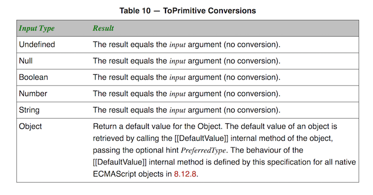

This post is about the various ways you can create a Date in JavaScript,
both documented and undocumented, how it works under the hood, and the (maybe surprising) results you get.
I first came across this while working on NUSMods and Flow warned that passing an array of values to Date is not valid.
However if you actually try it, say in node interpreter or in your browser's console, it works:
new Date([2016, 8, 8])
> Mon Aug 08 2016 00:00:00 GMT+0800 (SGT)And indeed, this is not a specified way of constructing a Date - you don't see it in MDN reference for Date.
However, my code still ran fine. And when I tried to change it to use multiple arguments instead, the result was different:
new Date(2016, 8, 8)
> Thu Sep 08 2016 00:00:00 GMT+0800 (SGT)Notice how it is Sep now instead of Aug.
But if I passed in a string, it works as expected:
new Date('2016, 8, 8')
> Mon Aug 08 2016 00:00:00 GMT+0800 (SGT)This led to me investigating how the Date constructor works.
Creating a Date
The information below comes from this very informative MDN reference on
Date
Creating a Date looks pretty straightforward in JavaScript, you call the constructor with the new keyword - new Date().
There are 4 specified ways, of varying convenience, that you can call the constructor.
No arguments, gives you the current time:
new Date()Integer value (really a number) - treated as milliseconds since epoch (1 January 1970 00:00:00 UTC):
new Date(1483372800000)String representing a date - parsed by
Date.parse():new Date('2017-01-03')Multiple number arguments - minimally requires a year and month, but you can specify up to 7 (extra arguments are ignore):
new Date(2017, 0, 3)
An aside on months
If we read the reference in more detail, we can understand why this happens:
new Date(2016, 8, 8)
> Thu Sep 08 2016 00:00:00 GMT+0800 (SGT)month
Integer value representing the month, beginning with 0 for January to 11 for December.
So 8 is treated as the 9th month, which is Sep.
How about the case when we pass in a string?
new Date(Date.parse('2016, 8, 8'))
> Mon Aug 08 2016 00:00:00 GMT+0800 (SGT)The month is treated more naturally, in this case 8 is parsed as August.
So what's left is the case when an array is passed into Date.
Creating Dates with every possible type
It helps to first examine the data types in JavaScript,
and pass each of them to Date to see what happens.
There are 6 types:
numberstringnullundefinedbooleanobject(anarrayis anobject)
An integer in JavaScript is really a double (number type):
(new Date(10)).valueOf()
> 10
(new Date(10.9)).valueOf()
> 10we use valueOf to get the milliseconds represented by the date (which is also how
Dateis implemented)
Seems like a double is rounded down.
Passing null and boolean seem to give us the same effect as passing 0:
(new Date(0)).valueOf()
> 0
(new Date(null)).valueOf()
> 0
(new Date(false)).valueOf()
> 0
(new Date(true)).valueOf()
> 0How about undefined?
(new Date(undefined))
> Invalid Date
(new Date(undefined)).valueOf()
> NaNIt sets the internal value of Date to NaN.
And the same goes for an object:
(new Date({})).valueOf()
> NaNHowever, when we pass in an array (which is an object), even with just 1 value, we get a perhaps surprising result:
new Date([0])
> Sat Jan 01 2000 00:00:00 GMT+0800 (SGT)Arrays, primitive value, and default value
So what's going on? A quick Google search turned up this StackOverflow result.
The answer mentions something about converting the argument into a primitive value by calling an internal method called [[DefaultValue]],
which converts the array into a string.
I like how concise the article is, but I also felt that it will be instructive to dig deeper into the spec and also the source code.
The relevant part of the ES5 spec is section 15.9.3.2. It describes what to do when a single argument is passed to the Date constructor.
- Let v be
ToPrimitive(value)
The first step is to convert the input to a primitive value using ToPrimitive, which behavior is detailed in section 9.1 of the same spec.

Of the 6 types mentioned above, only Object is not a primitive value. So it needs be converted.
An array in JavaScript is really an object, so this falls to the last case in the table, which is to "Return a default value for the Object" by calling [[DefaultValue]].
This is also detailed in the spec in section 8.12.8.
The description slightly more involved than what we've seen, so in short, the [[DefaultValue]] of an array is the result of calling toString() on the array.
[0].toString()
> "0"So what really happened was that when we passed [0] to Date, it is first converted to the string "0", and this falls into case 3 of creating a Date.
"0" is successfully parsed into a Date which gives us Jan 1st of 2000.
We can verify that this is the case:
(new Date([0])).valueOf() === (new Date('0')).valueOf()
> trueSo now we have an answer to the original example:
[2016, 8, 8].toString()
> "2016,8,8"
> new Date([2016, 8, 8])
Mon Aug 08 2016 00:00:00 GMT+0800 (SGT)
> new Date([2016, 8, 8].toString())
Mon Aug 08 2016 00:00:00 GMT+0800 (SGT)
(new Date([2016, 8, 8])).valueOf() === (new Date('2016,8,8')).valueOf()
> trueImplementation
I also wanted to see how the implementation is like so I went around digging.
I thought I could find this in V8, but I only found a date.cc that didn't seem to implement the Date constructor.
Digging a bit more led me to builtins-date.cc, which is basically what is called when
we write new Date() in JavaScript.
Here you can see the checks for the number of arguments, as well as calling Object::ToPrimitive on the value, and then parsing it if it is a string.
Looking around a bit more, I stumbled upon a test file in node, date-constructor.js,
which mentions a WebKit bug,
that led me to look into WebKit.
This has a similar implementation to V8, in DateConstructor.cpp.
Slight aside on modern JavaScript engines: V8 is the JavaScript engine that powers chrome (and node), whereas WebKit uses JavaScriptCore, which is what powers Safari.
And if you're willing to dig deeper, you can figure out how toPrimitive is implemented starting from builtins-conversion.cc in V8 and JSObject.cpp in WebKit.
But for now, my Date with JavaScript is over.